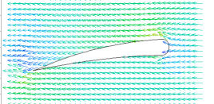

|
airfoil |

  
|
|
airfoil |
|
{ AIRFOIL.PDE
This example considers the laminar flow of an incompressible, inviscid
fluid past an obstruction.
We assume that the flow can be represented by a stream function, PSI,
such that the velocities, U in the x-direction and V in the y-direction,
are given by:
U = -dy(PSI)
V = dx(PSI)
The flow can then be described by the equation
div(grad(PSI)) = 0.
The contours of PSI describe the flow trajectories of the fluid.
The problem presented here describes the flow past an airfoil-like figure.
The left and right boundaries are held at PSI=y, so that U=-1, and V=0.
}
title "Stream Function Flow past an Airfoil"
variables { define PSI as the system variable } psi
definitions far = 5 { size of solution domain } psi_far = y { solution at large x,y }
equations { the equation of continuity: } psi : div(grad(psi)) = 0
boundaries |
 |
region 1 { define the domain boundary }
start(-far,-far) { start at the lower left }
{ impose -dy(psi)=U=-1 (outward normal of psi) on the bottom boundary }
natural(psi)= -1
line to (far,-far) { walk the boundary Counter-Clockwise }
natural(psi)=0 { impose dx(psi)=0 on right }
line to (far,far)
natural(psi)=1 { impose dy(psi)=-U=1 on top }
line to (-far,far)
natural(psi)=0 { impose -dx(psi)=0 on left }
line to close { return to close }
start(-0.5,-0.05) { start at lower left corner of airfoil }
value(psi)=0 { specify no flow through the airfoil surface }
arc to (0.0,0.02) to (0.5,0.05) { specify a gentle arc by three points }
arc (center=0.495,0.1) to (0.5,0.15) { a tight arc by two points and center }
arc to (0.075,0.105) to (-0.35,0) { the top arc by three points }
line to close { finally a straight line to close the figure }
monitors{ monitor progress while running }
contour(psi) zoom (-0.6,-0.4,1.4,1.2) as "stream lines"
plots { write hardcopy files at termination }
grid(x,y) zoom (-0.6,-0.4,1.4,1.2)
contour(psi) zoom (-0.6,-0.4,1.4,1.2) as "stream lines" painted
{ show the flow vectors: }
vector(-dy(psi),dx(psi)) zoom (-0.6,-0.4,1.4,1.2)as "flow" norm
surface(psi) zoom (-0.6,-0.4,1.4,1.2) as "stream lines"
end